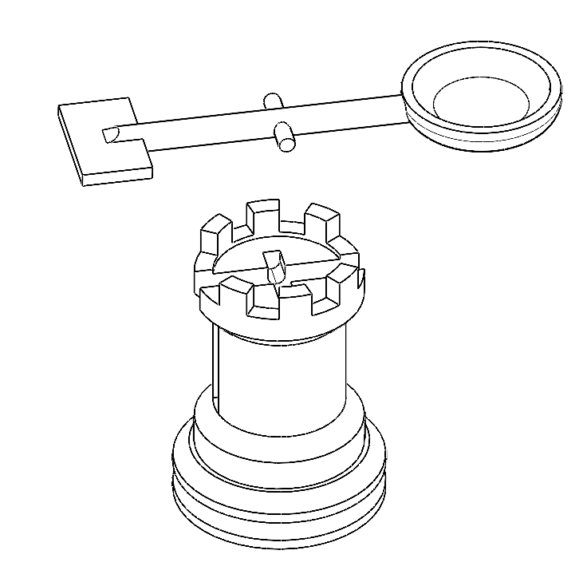
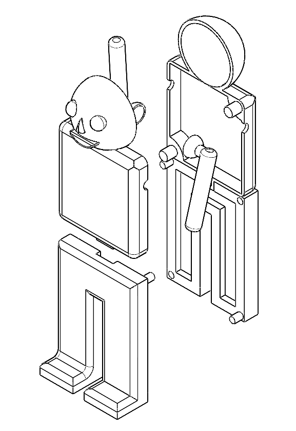

EGR121L · SOLIDWORKS · DESIGN FOR MANUFACTURING · 2026
Happy Meal Toy
Siege the Waste™
A medieval catapult and break-apart barbarian that turns the meal's own wrappers into ammo, designed for injection molding at about $0.24 per unit.


TOY DESIGNOVERVIEW
Defeat the barbarian, save the kingdom
For EGR121 Design Challenge 3, our four-person team was asked to design a McDonald's Happy Meal toy that is creative, fun, low-cost, sustainable, and safe enough to pass standard choke-test requirements. The final design was presented at the Duke Toy Fair.
Siege the Waste™ pairs a castle-tower catapult with a barbarian target. Kids crumple the wrapper from their meal into a ball, load it into the catapult's cup, and tap the other end of the arm to launch it. A direct hit knocks the barbarian over, and its torso breaks away from its legs.
MY ROLE
Catapult design and the full CAD model
I designed the catapult, both the castle-tower base and the lever arm, and modeled it in SolidWorks. Partway through the project we found that part of the team had been working in Onshape while the rest of us used SolidWorks, so the files couldn't be combined into one assembly. I rebuilt every part in SolidWorks, including the barbarian's torso and legs, so we could make the complete assembly and the exploded views for the final memo.
It taught me to agree on shared tools at the very start of a team project. That single CAD platform decision would have saved us a lot of repeated work.
IDEATION
From whiteboard to catapult
We started with an open brainstorm, sketching concepts that ranged from vehicles and character figures to a voice changer and launching mechanisms. We scored each idea on safety, ease of manufacturing, creativity, user interaction, and potential for sustainability. The catapult won because it offered real interactive play with a simple mechanism, and the medieval theme gave younger kids a story to play along with.
DESIGN & TOLERANCING
Built to be molded
The toy has four main parts: the catapult base, the lever arm, and a two-piece barbarian with separate torso and legs. Each part was modeled in CAD, and we documented its critical-to-function dimensions in part drawings. Worst-case tolerance analysis covered the pivot pins and holes, the catapult arm's pivot slot, and the slot between the torso and legs that lets the barbarian break apart and snap back together.
Every part was shelled to cut down on plastic. The torso and legs are each split into two mirrored halves with matching pegs and holes, which keeps the molds simple.
MANUFACTURING & SUSTAINABILITY
About a quarter per toy
All parts are specified in polypropylene copolymer (PP-cp), a durable, recyclable plastic that is cheap to mold. Our cost estimate covered injection molding, heat staking to join the halves, and pad printing for the details, for a total of about $0.24 per unit.
The toy doesn't come with a plastic projectile. Kids reuse the wrappers and napkins already in the meal, which means less waste and no small loose pieces.
CAD
Exploded assemblies


TECHNICAL MEMO
EGR121 Design Challenge 3
Scroll through the project memo or open the full document separately.